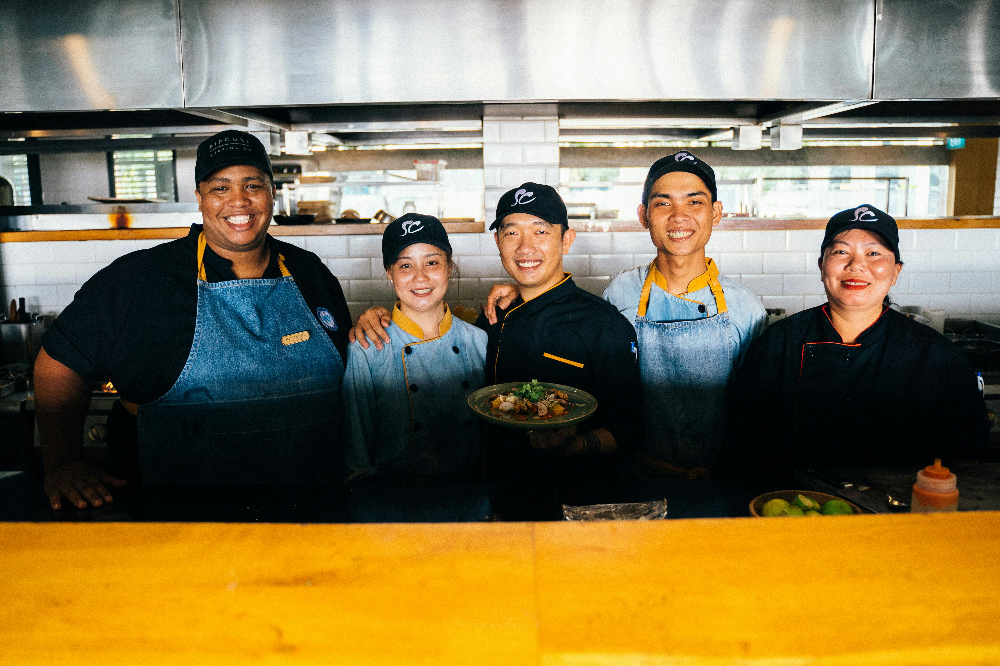

Quiénes Somos
En Sabores del Mundo, somos un equipo apasionado por la gastronomía internacional. Nuestro objetivo es brindar a nuestros clientes una experiencia culinaria única, combinando sabores exóticos con ingredientes locales de alta calidad.
Nuestra Historia
Fundado en 2010, nuestro restaurante ha sido reconocido por su excelencia y compromiso con la innovación culinaria. A lo largo de los años, hemos incorporado platos de diferentes culturas, siempre respetando las tradiciones y aportando nuestro toque personal.
Nuestro Equipo
Contamos con chefs internacionales y personal altamente capacitado, dedicados a ofrecer el mejor servicio y la más alta calidad en cada plato.
